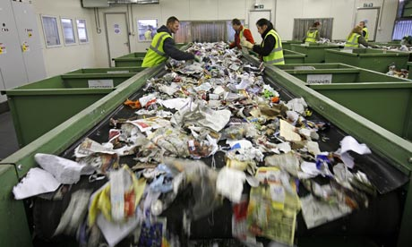

Facts
Facts
These could be prevented if everyone recycled.
- Avergae person generates 4lbs of trash everyday.
- 75% of the American waste stream is recyclable, yet only 30% is recycled.
- Recycling one aluminum can can save enough energy to listen to a full album on your ipod
- 28 Billion bottles and jars thrown away every year.
|
|
Postive statistics
Recycling had increased over 89% since 1990
- Recycling creates jobs
- Recycling and composting diverted nearly 70 million tons of material away from landfills and incinerators in 2000, up from 34 million tons in 1990-doubling in just 10 years.
- Conserves natural resources.
- Every ton of office paper recycled is the equivalent of 24 trees.
|
|
You can make a difference!
Everyone can make a difference. Every little bit counts as our planet is very precious to us.
Images
